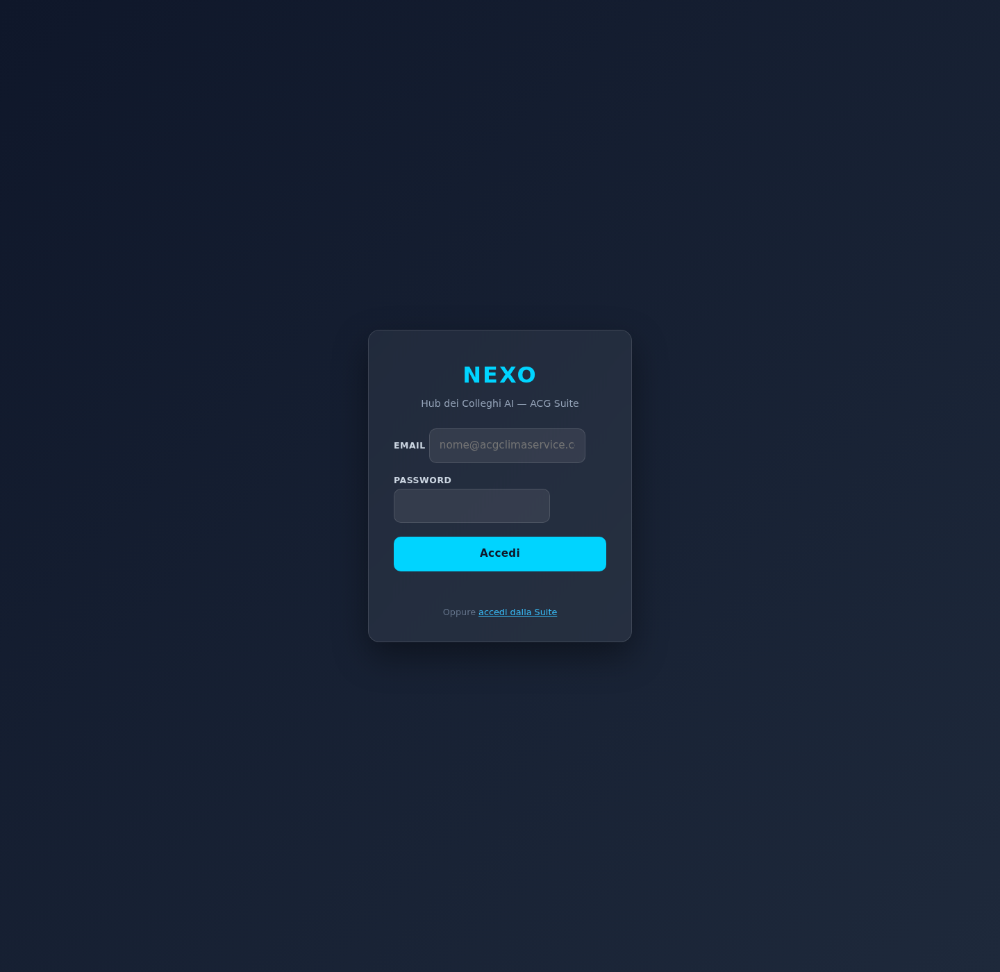

CHRONOS passa da dashboard solo-campagne a pianificatore completo con 3 tab:
Ogni card è espandibile (chevron ▾) con tabella dettaglio. Lazy-loading: ogni tab fa il fetch solo al primo click.
| Tecnico | Tot | Oggi | Settimana | Scaduti | Completati | % |
|---|---|---|---|---|---|---|
| (non assegnato) | 135 | 0 | 0 | 32 | 102 | 76% |
| VICTOR | 72 | 0 | 2 | 18 | 52 | 72% |
| DAVID | 55 | 0 | 0 | 10 | 45 | 82% |
| FEDERICO | 42 | 0 | 1 | 9 | 32 | 76% |
| MARCO | 37 | 0 | 4 | 7 | 26 | 70% |
| LORENZO | 25 | 1 | 2 | 7 | 15 | 60% |
| ANTONIO | 18 | 0 | 0 | 7 | 11 | 61% |
| ALBERTO | 4 | 0 | 0 | 1 | 0 | 0% |
| ERGEST | 4 | 0 | 0 | 4 | 0 | 0% |
| CLAUDE | 1 | 0 | 0 | 0 | 1 | 100% |
| GIANLUCA | 1 | 0 | 0 | 0 | 1 | 100% |
Globale: tot=394, oggi=1, settimana=9, scaduti=95, completati=285, 72% completamento.
⚠️ "VICTOR/Victor" ora normalizzati maiuscoli (erano duplicati).
| Bucket | Impianti |
|---|---|
| Scaduti | 8 |
| Entro 30 giorni | 0 |
| 31-60 giorni | 0 |
| 61-90 giorni | 0 |
| Oltre 90 giorni | 0 |
| Senza data | 318 |
⚠️ Solo 8 impianti su 326 hanno una data di scadenza registrata in cosmina_impianti.
La UI mostra un warning evidente. Può essere utile per MEMO scan successivo: capire dove sono le date reali.
[PWA CHRONOS page]
│
├── tab Campagne → chronosCampagneDashboard (esistente)
├── tab Agenda → chronosAgendaDashboard (nuovo)
└── tab Scadenze → chronosScadenzeDashboard (nuovo)
│
▼
verifyAcgIdToken() → auth required
│
▼
buildXxxDashboard() in handlers/chronos.js
Memory: 512MiB · timeout 60s · region europe-west1
CORS: applyCorsOpen (coerente con altri endpoint)
projects/iris/functions/handlers/chronos.js
(+ buildAgendaDashboard, buildScadenzeDashboard)projects/iris/functions/index.js
(+ chronosAgendaDashboard, chronosScadenzeDashboard)projects/nexo-pwa/public/index.html
(tab nav, .chronos-expandable, render agenda/scadenze)Commit: e31a4ba — feat(chronos): tab Agenda + Scadenze con card espandibili
URL: https://nexo-hub-15f2d.web.app/#collega:chronos
Hard refresh dopo login:
caches.keys().then(k=>k.forEach(c=>caches.delete(c))); location.reload(true);

Gate login visibile. Dopo login reale si vedono i 3 tab Campagne/Agenda/Scadenze.